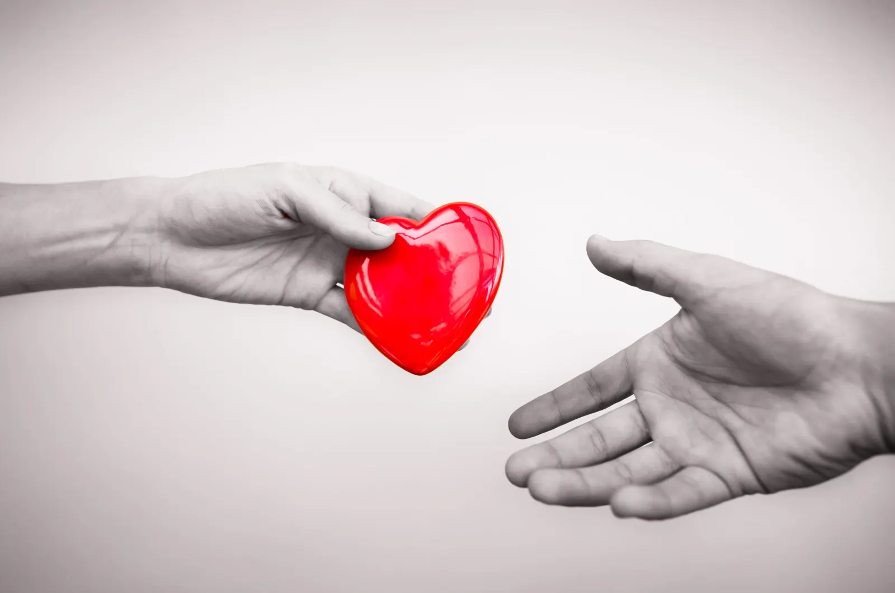

Self-Growth
Ask about this article on WhatsApp
By Mariam Khan · PRC Pakistan · 2 min read
Goodness

ہم بعض دفعہ کسی دوسرے کو سبق سکھانے یا اس سے بدلہ لینے یا اسے احساس دلانے کے لیے اپنے آپ کو اس قدر تبدیل کر لیتے ہیں کہ ہم اپنی ذات کی خوبصورتی کہیں کھو دیتے ہیں.
اتنا عرصہ غصے کے اظہار کے لیے خاموش رہ لیتے ہیں کہ اپنی مسکراہٹ ہی بھول جاتے ہیں۔
اتنی دیر اپنی خواہشات کو روکے رکھتے ہیں کہ سالوں گزر جاتے ہیں پتھر کے بُت بنے۔
دوسرے سے تکلیف یا مایوسی ملنے کی صورت میں صرف یہ دھیان رکھ لیں کہ اس کی سانس بند کرنے کے چکر میں کہیں ہم اپنے حصے کی سانس بھی تو نہیں روک رہے۔
اپنی اچھائی کو اس شخص سے چھین لیں لیکن اپنی اچھائی کو دفن نہ کریں۔ اس کے لیے اور لوگ، موقعے، ساتھ ڈھونڈ لیں۔
سوچیں.... آپ کے کندھے پر سے بہت سا بوجھ اتر جائے گا۔